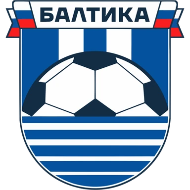
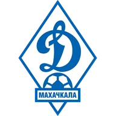
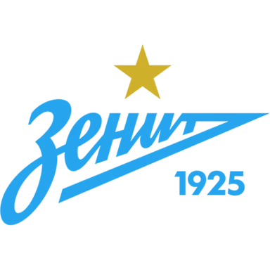
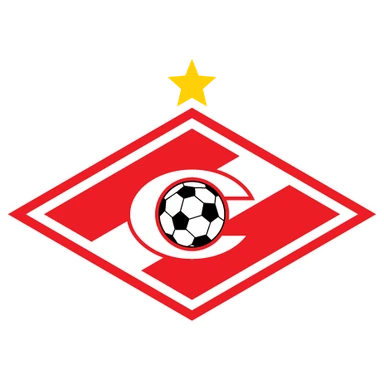
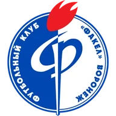
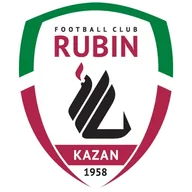
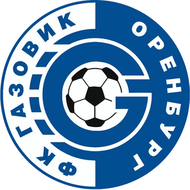

Ростов — Крылья Советов прогноз на матч 20 ноября
Расчёт модели
- 1,4 : 1,2ожидаемые голы
- 48 %тотал больше 2,5
- 52 %обе забьют
Цифры считает модель по данным сайта, а не эксперт. Это вероятности, а не гарантия исхода. Как считает модель · словарь терминов.
- ТурнирРПЛ
Коротко о матче
По форме команды близки: в пяти последних матчах Ростов — 3 победы, Крылья Советов — 2 победы. По голам за эти пять матчей: Ростов — в среднем 1,6 забито и 0,4 пропущено, Крылья Советов — 1,2 и 1,2.
В последний раз команды встречались 23 ноября 2025 года: Крылья Советов — Ростов 2:0.
Модель чуть выше оценивает шансы одной стороны: Ростов — 42 % на победу. Это оценка по данным, а не обещание исхода.
Форма: последние матчи
Ростов 3 победы из 5
- В1:0

Н0:0- В2:0

В3:0
Н2:2
Крылья Советов 2 победы из 5

Н1:1
П1:2
В2:0- П0:3

В2:0
Личные встречи
- Крылья Советов2:0Ростов
- Ростов1:4Крылья Советов
Положение в таблице
| Команда | Место | И | В | Н | П | Голы | Очки |
|---|---|---|---|---|---|---|---|
| Ростов | 6 | 14 | 5 | 4 | 5 | 18:19 | 19 |
| Крылья Советов | 7 | 14 | 4 | 6 | 4 | 19:20 | 18 |
Куда дальше
Материалы носят информационный характер и не гарантируют результат. Реклама букмекеров на сайте не размещается. Сайт только для совершеннолетних (18+).